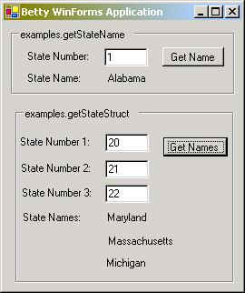
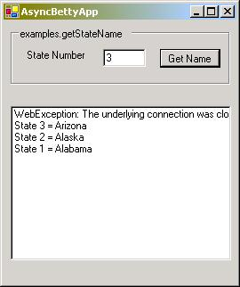
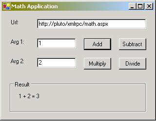
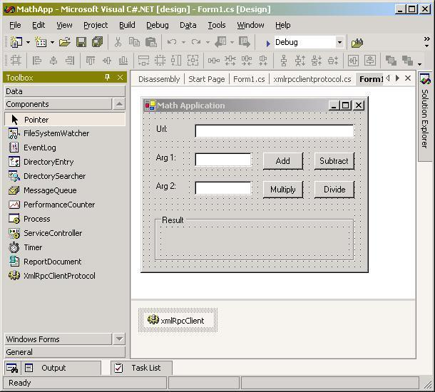

XML-RPC.NET Samples |
Cook Computing |
This example builds three assemblies.
This assembly contains the definition of the interface to be used by both client and server.
public struct StateStructRequest
{
public int state1;
public int state2;
public int state3;
}
public interface IStateName
{
[XmlRpcMethod("examples.getStateName")]
string GetStateName(int stateNumber);
[XmlRpcMethod("examples.getStateStruct")]
string GetStateNames(StateStructRequest request);
}
This assembly contains the implementation of the IStateName interface and also an entry point for when the assembly is used as a standalone server (it can also be used in IIS).
The class implementing the server's functionality inherits from MarshalByRefObject so that it can be used with .NET Remoting and of course the interface that the client will use.
public class StateNameServer : MarshalByRefObject, IStateName
{
[XmlRpcMethod("examples.getStateName")]
public string GetStateName(int stateNumber)
{
// implementation
}
[XmlRpcMethod("examples.getStateStruct")]
public string GetStateNames(StateStructRequest request)
{
// implementation
}
}
The Main function configures Remoting via a config file (to specify that both XML-RPC and SOAP are supported) and then registers the server class, specifying a URL and the mode under which the server will operate.
class _
{
static void Main(string[] args)
{
RemotingConfiguration.Configure("StateNameServer.exe.config");
RemotingConfiguration.RegisterWellKnownServiceType(
typeof(StateNameServer), "statename.rem",
WellKnownObjectMode.Singleton);
Console.WriteLine("Press to shutdown");
Console.ReadLine();
}
}
The config file is named StateNameServer.exe.config and is placed in the same directory as the executable assembly. The file specifies both XML-RPC and SOAP support by including two formatter elements under the serverProviders element of the channel element. The channel is specified as http and the port on which the server will listen as 5678.
<configuration>
<system.runtime.remoting>
<application>
<channels>
<channel ref="http" port="5678">
<serverProviders>
<formatter
type="CookComputing.XmlRpc.XmlRpcServerFormatterSinkProvider, CookComputing.XmlRpc" />
<formatter ref="soap" />
</serverProviders>
</channel>
</channels>
</application>
</system.runtime.remoting>
</configuration>
This assembly contains the client. A command line argument is used to specify whether the request to the server will be via the SOAP or XML-RPC protocol. In the case of SOAP a default instance of HttpChannel is used but for XML-RPC the instance of HttpChannel is configured to use the XML-RPC formatter sink instead.
The Activator is used to create a Transparent Proxy bound to the required URL and the call to the server is made via this proxy.
class _
{
static void Main(string[] args)
{
bool bUseSoap = false;
if (args.Length > 0 && args[0] == "SOAP")
bUseSoap = true;
HttpChannel chnl;
if (bUseSoap)
chnl = new HttpChannel();
else
chnl = new HttpChannel(null,
new XmlRpcClientFormatterSinkProvider(), null);
ChannelServices.RegisterChannel(chnl);
IStateName svr = (IStateName)Activator.GetObject(
typeof(IStateName),
"http://localhost:5678/statename.rem");
int stateNumber = 1;
string ret = svr.GetStateName(stateNumber);
Console.WriteLine("statename ({0}) is {1}", stateNumber, ret);
}
}
Depending on requirements Remoting server classes may be run under IIS. A virtual directory is created and the assemblies placed in its bin directory. The config file is called web.config in this case and specifies two aspects of the server: the service element specifies the server class and its URL, and the channels element specifies that two formatters are supported, the default SOAP formatter and the XML-RPC formatter.
<configuration>
<system.runtime.remoting>
<application>
<service>
<wellknown mode="Singleton"
type="StateNameServer, StateNameServer"
objectUri="statename.rem" />
</service>
<channels>
<channel ref="http">
<serverProviders>
<formatter
type="CookComputing.XmlRpc.XmlRpcServerFormatterSinkProvider, CookComputing.XmlRpc" />
<formatter ref="soap" />
</serverProviders>
</channel>
</channels>
</application>
</system.runtime.remoting>
</configuration>
Obviously the URL used by the client should be changed to connect to IIS, for example:
IStateName svr = (IStateName)Activator.GetObject(typeof(IStateName),
"http://localhost/statename/statename.rem");
This is a WinForms application which connects to the sample XML-RPC server at betty.userland.com.It calls both examples.getStateName and examples.getStateStruct. In the case of the latter function it only allows 3 state numbers to be specified even though the struct passed in the XML-RPC call can contain any number of state numbers.

Note that if you need to connect to external HTTP servers via a proxy server, if this is configured correctly in Internet Explorer XML-RPC.NET will use the proxy server.
This WinForms sample illustrates how to make asynchronous XML-RPC calls using XML-RPC.NET. .

By using a separate instance of a proxy class derived from XmlRpcClientProtocol it is possible to send multiple requests concurrently. As the response to each request is received the result is displayed in the list box, along with any exceptions.
This is a WinForms application which connects to an instance of the MathService XML-RPC server (see below for description of service). It calls the methods math.Add, math.Subtract, math.Multiply, and math.Divide.

This sample illustrates the use of the XmlRpcClientProtocol component within Visual Studio. The component has been added to the Toolbox and then dragged onto the design-template of the form. Because the component is not GUI-based it appears in a separate window below the template.

Each method of the service is represented by a proxy function in the form class:
[XmlRpcMethod("math.Add")]
public int Add(int a, int b)
{
return (int)xmlRpcClient.Invoke(this, "Add", new object[] {a,b});
}
The methods are called as follows:
private void butAdd_Click(object sender, System.EventArgs e)
{
Cursor = Cursors.WaitCursor;
try
{
labResult.Text = "";
int a = Convert.ToInt32(txtArg1.Text);
int b = Convert.ToInt32(txtArg2.Text);
int result = Add(a, b);
labResult.Text = txtArg1.Text + " + " + txtArg2.Text
+ " = " + result.ToString();
}
catch (Exception ex)
{
HandleException(ex);
}
Cursor = Cursors.Default;
}
This sample exposes 4 XML-RPC methods - math.Add, math.Subtract, math.Multiply, and math.Divide - each of which takes two integer parameters. An XML-RPC fault response is returned if divide-by-zero is attempted.
To install MathService, create a virtual directory in IIS and place MathService.dll and CookComputing.XmlRpc.dll in a sub-directory called bin. In the virtual directory create a file called web.config with this content:
<configuration>
<system.web>
<httpHandlers>
<add verb="*" path="math.rem"
type="MathService.MathService, MathService" />
</httpHandlers>
</system.web>
</configuration>
The URL for the service will be of the form:
http://servername/virtual_directory/math.aspx
Please check this page for URLs of currently available demo XML-RPC Services.
| © Charles Cook, 2001,2002, 2003 All Rights Reserved. |
5
January 2003
|